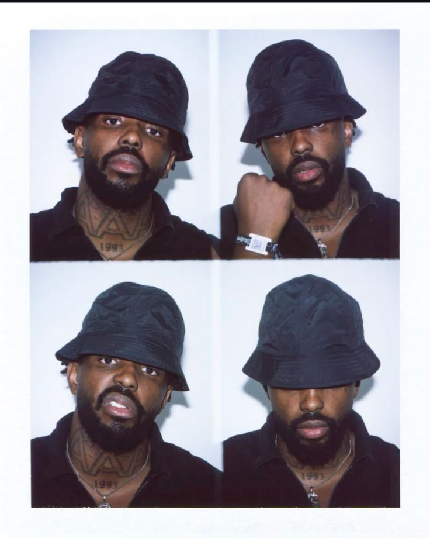

Jordy Makala, né en 1993 à Bienne, est un rappeur suisse d'origine congolaise. Figure centrale du collectif genevois Superwak Clique, aux côtés de Di-Meh et Slimka, il s'est imposé comme l'un des artistes les plus exigeants et singuliers du rap francophone.
Son univers conjugue trap futuriste, expérimentations sonores et une esthétique visuelle rétro-moderne à nulle autre pareille. Avec YAMOTO, Makala pousse plus loin l'alchimie avec son producteur de toujours, Varnish La Piscine — 8 titres denses, intenses, sans compromis.
Premier rappeur suisse à remplir l'Olympia de Paris (2023), sa puissance scénique est légendaire. Sa nouvelle tournée 2026 s'annonce comme un événement incontournable.